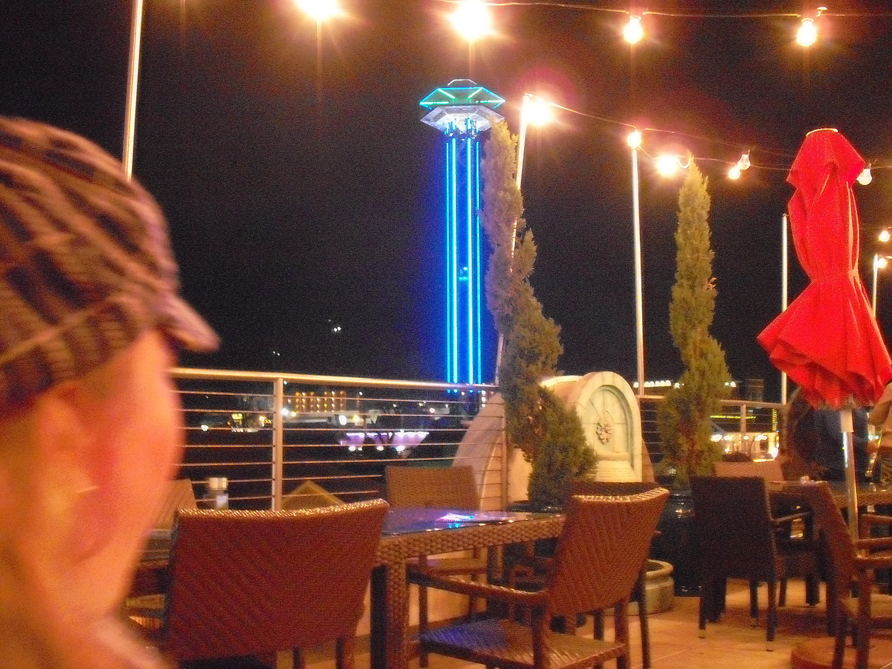

Loco Burro Restaurant - Gatlinburg TN
From The life and Travels of Mia and Family
When visiting downtown Gatlinburg strip, I highly recommend dinner at Loco Burro's restaurant. Stop at the glisting lights on the sidewalk and ride the magical escalator to the middle floor of the restaurant. You will be greated by a host and pass by a mechanical donkey that usually attracts several "over endulged" adults and lots of good laughs. If you ask the waiter/waitress nicely to go up to the roof level, there is a top patio with gas powered, glass fireplaces, and couches, chairs that overlook the Gatlinburg main strip. Patio may be closed during cold or severe weather. You can enjoy a nice beverage or scrumptious food, while secretly watching and making fun of the tourists below!
NOTICE: All photos are original property of the website owner.

{kind=link}
Are you ready for a gourmet breakfast and dinner provided by a fantastic host? Look no further than Grey Gables B&B. Relax and unwind on the porch, in your private room, or mingle with new friends! The choice is yours!

Christmas time is always our favorite time of year to go to this B&B. The Inn is always fully decorated and full of cheer! Historic Rugby also entertains the public with the annual Christmas at Rugby event! It's a great combo to visit Historic Rugby and stay at Grey Gables!

There are 10 decorated bedrooms that represent the English culture as well as the comfort of country living. The total cost includes: A full nights stay, a fantastic country breakfast and a gourmet Dinner!